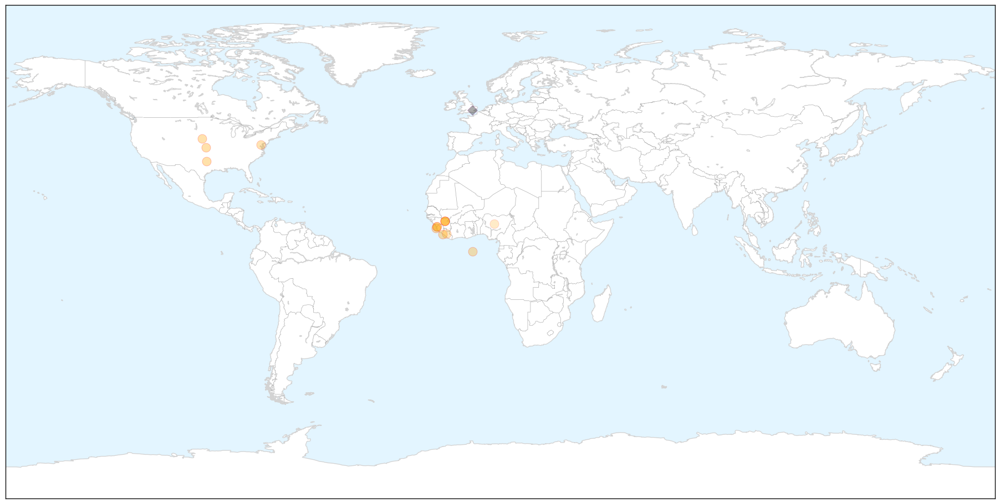
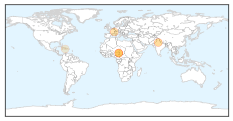

Ebola
30-Day Web Trend
0 alerts, 0 warnings

30-Day Twitter Trend
0 alerts, 0 warnings

Article Locations

X

Article Confidences

Top Articles:
- 0.998
- Report Highlights Lessons Learned from Texas Hospital during Ebola Crisis
- 0.998
- Rapid response to new Ebola infection in Bombali, Sierra Leone
- 0.996
- National Emergency Operations Centers Support Long-Term Public Health Infrastructure in West Africa
- 0.993
- The aftermath of Ebola sparks a rethink about aid
- 0.984
- AIDS on steroids: comparing the spread of Ebola and AIDS in Africa
- 0.979
- Dying to Live by Samuel Kargbo
- 0.974
- Nigeria Confirms 2 New Ebola Cases
- 0.968
- New Sierra Leone Ebola Cases Frustrate Efforts to End Outbreak, Articles
- 0.968
- American Cameraman has Ebola After Working in Liberia for NBC News
- 0.937
- Georgia's response to Ebola strengthened its hospital system, health officials say
- 0.911
- State Dept. Issues Sierra Leone Travel Warning, Sept. 17, 2015
- 0.867
- Power of prayer heals Ebola in Liberia
- 0.810
- Tens of Thousands of Births Remain Unregistered
- 0.793
- Getting Liberian children back into school as nation is declared Ebola-free
- 0.652
- UBA Supports Movie on War against Ebola, Articles
Top Tweets:
- 0.983
- RAPIDE ran clinical trials for two potential treatments for Ebola virus disease: brincidofovir (Liberia) and TKM-130803 (Sierra Leone).
- 0.910
- Guinea reports Ebola-free week but Sierra Leone has 5 cases - CIDRAP http://t.co/oUDmzx4HKe ebola EVD
- 0.649
- Sacra: Ebola Vaccine May Be Game Changer - Christian Broadcasting Network http://t.co/Mx3aWORq7Q ebola EVD
- 0.622
- Confusion and Fear of Ebola Delayed Treatment for Some Kids - Live Science http://t.co/kAeFSlPZYR ebola EVD
- 0.605
- Ebola vaccines face daunting path to approval - Science /AAAS http://t.co/pBfpieinj0 ebola EVD
- 0.596
- Georgia tracked 1400 people exposed to Ebola - Savannah Morning News http://t.co/CW7lwtFRWv ebola EVD
- 0.545
- Experimental Ebola drug ZMapp gets fast track status from FDA - CNN http://t.co/hW88AjiBxE ebola EVD
Cholera
30-Day Web Trend
2 alerts, 0 warnings

30-Day Twitter Trend
0 alerts, 0 warnings

Article Locations
Article Confidences

Top Articles:
- 0.941
- Nigeria: People fleeing Boko Haram violence hit by cholera
- 0.939
- MSF appeals for help as cholera spreads in displaced-persons camps in north-eastern Nigeria
- 0.938
- Nigeria: People fleeing Boko Haram violence hit by cholera, MSF appeals for international support in emergency-struck Borno state - Nigeria
- 0.657
- Delhi superbug now in over 70 nations
- 0.624
- New Delhi superbug spreads to 70 countries across the world
- 0.599
- Cholera kills 16 in north Nigeria, medical charity MSF calls for help
- 0.532
- Dady Chery and Eric Draitser Discuss Imperialism and Colonialism in Haiti
Top Tweets:
-
No tweets found for Sep 17, 2015